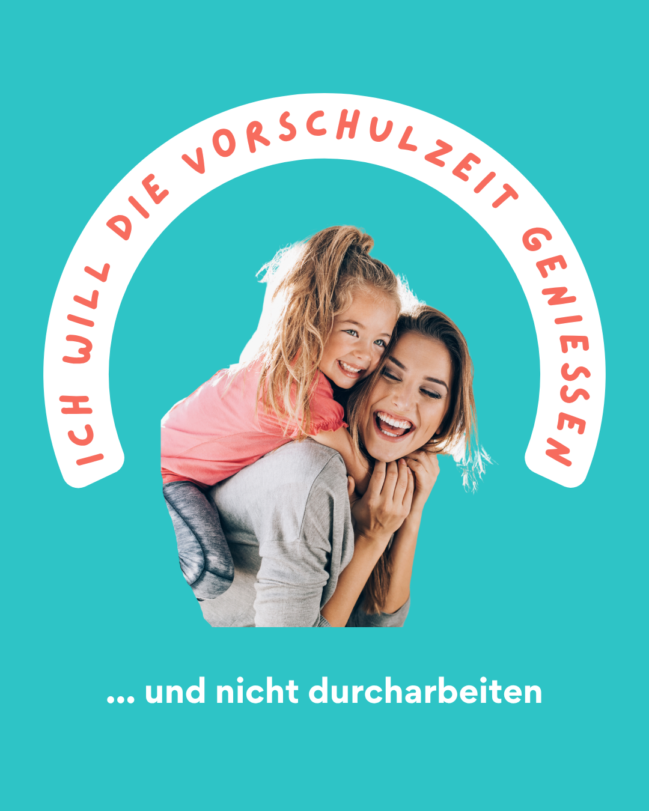

Vielleicht kennst du diesen Gedanken: Es ist das letzte Kita Jahr. Jetzt wird es ernst. Jetzt beginnt die Vorbereitung. Jetzt sollte ich wirklich nichts verpassen. Und während du das denkst, spürst du gleichzeitig etwas anderes. Eine leise Sehnsucht. Ich will diese Zeit genießen. Ich will nicht jeden Nachmittag am Tisch sitzen und „Vorschule machen". Ich will lachen, spielen, Ausflüge machen, kuscheln. Ich will mein Kind wachsen sehen, ohne ständig zu prüfen, ob es schon „bereit" ist.
Atme einmal tief durch. Du bist hier richtig. Der Schulstart ist kein Test. Er ist ein Entwicklungsschritt. Und Entwicklung ist kein Wettlauf. Auch wenn es sich auf Social Media manchmal so anfühlt. Dein Kind braucht nicht mehr Druck. Es braucht Sicherheit. Es braucht das Gefühl: Ich darf wachsen. Ich werde begleitet. Ich bin richtig, so wie ich bin.
Viele Eltern denken bei Schulreife zuerst an Zahlen, Buchstaben und Arbeitsblätter. Doch Schulreife entsteht von innen. Sie zeigt sich darin, dass dein Kind sich etwas zutraut. Dass es Frust aushalten kann. Dass es neugierig bleibt. Dass es sich in einer Gruppe orientieren kann. Dass es Hilfe holen kann, wenn es sie braucht. Kompetenzen sind wichtiger als Arbeitsblätter. Innere Stärke ist wichtiger als frühes Lesen.
Vielleicht fragst du dich trotzdem: Reicht das, was wir machen? Muss mein Kind nicht wenigstens seinen Namen schreiben können? Was, wenn andere schon weiter sind? Hier kommt die beruhigende Wahrheit: Vergleich erzeugt Druck. Orientierung erzeugt Sicherheit. Und Sicherheit ist die Grundlage für Lernfreude.
Kinder brauchen Orientierung
Wir leben in einer Zeit, in der du jederzeit sehen kannst, was andere Familien scheinbar alles tun. Perfekt vorbereitete Vorschulhefte. Wochenpläne. Lernspiele. Kinder, die mit fünf Jahren flüssig lesen. Es sieht strukturiert aus. Durchdacht. Erfolgreich. Und ganz schnell schleicht sich das Gefühl ein, nicht genug zu machen.
Doch Social Media zeigt Ergebnisse. Es zeigt selten Prozesse. Es zeigt selten Zweifel. Es zeigt selten die Kinder, die einfach spielen, träumen und wachsen.
Es geht nicht darum, alles zu ignorieren. Es geht darum, einordnen zu können. Orientierung bedeutet, dass du weißt, was entwicklungspsychologisch wirklich zählt. Dass du unterscheiden kannst zwischen hilfreichen Impulsen und unnötigem Leistungsdruck. Dass du Entscheidungen aus Ruhe triffst, nicht aus Angst. Dein Kind braucht nicht mehr Input. Es braucht dich als sicheren Wegweiser. Ruhig. Klar. Wertschätzend.
Wenn du verstehst, dass Schulreife ein ganzheitlicher Prozess ist, verändert sich dein Blick. Dann siehst du im freien Spiel nicht mehr „verlorene Zeit", sondern intensive Lernmomente. Dann erkennst du im selbstständigen Anziehen nicht nur Chaos, sondern wachsende Kompetenz. Dann merkst du, dass ein Kind, das Konflikte im Gruppenalltag austrägt, gerade genau das trainiert, was es in der Schule braucht: soziale Sicherheit und Frustrationstoleranz. Entwicklung braucht Vertrauen. Und dieses Vertrauen beginnt bei dir.
Wie Orientierung in der Kita gelingen kann
Beziehung als Fundament stärken: Der wichtigste Faktor im letzten Kita Jahr ist nicht ein zusätzliches Programm. Es ist Beziehung. Sprich mit den pädagogischen Fachkräften nicht aus Sorge, sondern aus Interesse. Frag nach, wie sie dein Kind erleben. Wo sie Stärken sehen. In welchen Situationen es besonders selbstbewusst wirkt. Wo es noch Unterstützung braucht. Wenn dein Kind sich in der Kita sicher fühlt, wenn es Vertrauen zu den Erzieherinnen und Erziehern hat, entsteht eine stabile Basis für den Übergang. Sicherheit entsteht durch Bindung, nicht durch Leistungsdruck. Ein Kind, das sich gesehen fühlt, kann mutig in neue Situationen gehen.
Selbstständigkeit im Alltag wachsen lassen: Schulreife zeigt sich im Alltag. Wenn dein Kind lernt, seine Tasche selbst zu packen, Verantwortung für kleine Aufgaben zu übernehmen oder eigene Entscheidungen zu treffen, dann wächst genau die innere Stärke, die es später im Schulalltag braucht. Du musst nicht mehr üben. Du darfst mehr zutrauen. Auch wenn es länger dauert. Auch wenn nicht alles perfekt klappt. Selbstbewusstsein entsteht nicht durch richtige Lösungen, sondern durch echte Erfahrungen. Wenn dein Kind merkt, dass du ihm etwas zutraust, beginnt es, sich selbst zu vertrauen.
Spiel als Lernraum anerkennen: Vielleicht hörst du manchmal die innere Stimme, die sagt: Müssten wir jetzt nicht langsam ernster werden? Doch genau hier darfst du umdenken. Spiel ist kein Gegensatz zu Lernen. Spiel ist Lernen. Im freien Spiel entwickeln Kinder Problemlösestrategien, Kreativität, Ausdauer und soziale Kompetenzen. Sie lernen, Regeln zu verstehen und eigene Ideen umzusetzen. Sie üben Perspektivwechsel und Empathie. Mehr Übungen sind nicht die Lösung. Die richtigen Impulse sind es. Und oft sind diese Impulse eingebettet in ganz normale Alltagssituationen.
Gefühle rund um den Übergang ernst nehmen: Der Übergang in die Grundschule ist groß. Auch wenn dein Kind nach außen stark wirkt, bewegen sich im Inneren viele Fragen. Werde ich Freunde finden? Ist die Lehrerin nett? Schaffe ich das? Du musst diese Fragen nicht sofort beantworten. Es reicht, sie auszuhalten. Zuhören. Spiegeln. Sicherheit geben. Du kannst sagen: Ich sehe, dass du groß wirst. Und ich bleibe an deiner Seite. Schulstart ist kein Sprung ins kalte Wasser. Er ist ein Schritt, der vorbereitet und begleitet wird. Emotionale Sicherheit ist die Basis für einen starken Start.
Vorschule darf sich leicht anfühlen
Du willst deinem Kind einen starken, entspannten Start in die Schule ermöglichen – ohne Druck, ohne ständiges „Mehr"? Bei EDULEO bekommst du fundiertes Wissen aus der Entwicklungspsychologie und frühkindlichen Bildung, alltagstaugliche Impulse für mehr Sicherheit im Familienalltag und klare Orientierung für die Vorschulzeit – ohne Überforderung.
Keine Panik. Kein Perfektionismus. Sondern ein Weg, der dich stärkt und dein Kind gleich mit. 💛